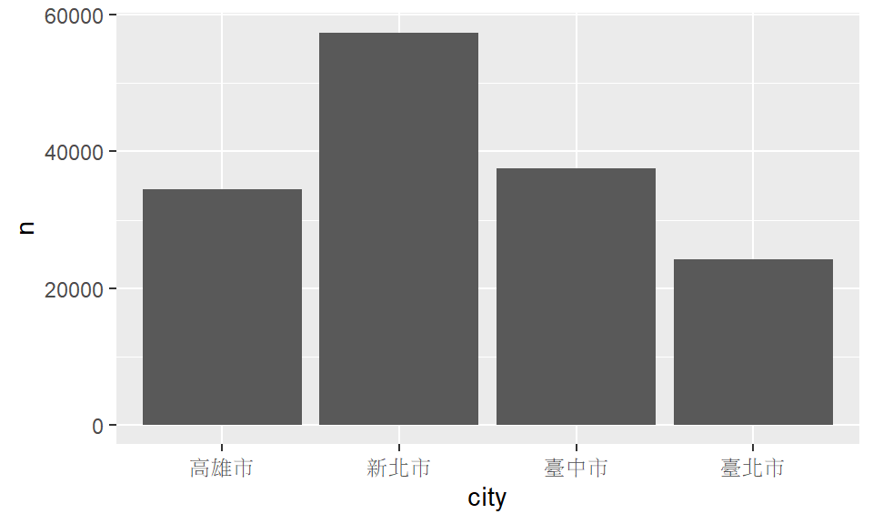

2018.12.3
課程綱要
Agenda
- EDA
- 基本統計量
- Data Visualization
- 套件
ggplot2plotlyhighcharter
- 介紹
- 套件基本架構
- 起手式(基本語法)
- 應用(各種圖形的呈現)
BarLineHistogramBoxplotPoint
- 進階技巧
EDA
- 基本統計量
- 整體概況 : 平均數、變異數等…
- 離群值
- Data Visualization
- 功能 :
- 探索瞭解資料
- 清晰有效地傳達與溝通訊息
- 目的 : 教學、研究、宣傳
- 進階 : 美學、功能兼顧
- 分析 : 統計圖形、訊息可視化
- 功能 :
資料視覺化 可以在不簡化資訊情況下， 降低複雜資料的理解門檻 幫助我們以較簡單的方式， 去理解高維度
ggplot
ggplot2簡介
- R環境下的繪圖套件
- 取自“The Grammar of Graphics”(Leland Wilkinson, 2005)
- 設計理念
- 採用圖層系統
- 用抽象的概念來控制圖形，避免細節繁瑣
- 圖形美觀
ggplot2基本架構
- 準備
- 資料 (data)、映射 (mapping)
- 主要
- 幾何對象 (
geometric) - 美學(
aesthetic)
- 幾何對象 (
- 次要
- 統計轉換 (
statistics) - 刻面 (
facet) - 座標系統 (
coordinante) - 主題 (
theme)
- 統計轉換 (


ggplot2 基本語法
ggplot(data=..., aes(x=..., y=...)) + geom_xxx(...) + stat_xxx(...) + facet_xxx(...) + ...
各個函數簡述 :
ggplot: 要呈現的dataaes: 圖上的元素和data之間的對應關係geom_xxx: 圖的類型和其他相關調整參數- 常見的圖類型 :
geom_bar,geom_line,geom_points, …
- 常見的圖類型 :
stat_xxx: 調整統計參數facet_xxx: 調整圖表呈現排列
Various functions
library(ggplot2)
# list all geom
ls(pattern = '^geom_', env = as.environment('package:ggplot2'))
[1] "geom_abline" "geom_area" "geom_bar" [4] "geom_bin2d" "geom_blank" "geom_boxplot" [7] "geom_col" "geom_contour" "geom_count" [10] "geom_crossbar" "geom_curve" "geom_density" [13] "geom_density_2d" "geom_density2d" "geom_dotplot" [16] "geom_errorbar" "geom_errorbarh" "geom_freqpoly" [19] "geom_hex" "geom_histogram" "geom_hline" [22] "geom_jitter" "geom_label" "geom_line" [25] "geom_linerange" "geom_map" "geom_path" [28] "geom_point" "geom_pointrange" "geom_polygon" [31] "geom_qq" "geom_qq_line" "geom_quantile" [34] "geom_raster" "geom_rect" "geom_ribbon" [37] "geom_rug" "geom_segment" "geom_sf" [40] "geom_smooth" "geom_spoke" "geom_step" [43] "geom_text" "geom_tile" "geom_violin" [46] "geom_vline"
注意
- 使用
data.frame儲存資料 (不可以丟 matrix 物件) - 使用
long format(利用reshape2、tidyverse將資料轉換成1 row = 1 observation)
- 部份情況例外，可以丟入原始資料!

畫圖前的準備
- 安裝套件
install.packages(c("ggplot2","dplyr","tidyverse","reshape2"))
- 載入套件
library(ggplot2) library(dplyr) library(tidyverse) library(reshape2)
注意:
換一台裝置時，可能需要先安裝套件~
下載完套件一定要記得
library才能使用喲!
從讀檔開始(.csv)
############### 絕對路徑 ###############
# 請輸入完整的檔案路徑
transaction <- read.csv("/Users/ASUS/Documents/2018nccu_r/week03/data/transaction.csv") #如果你是Mac,加上fileEncoding = "big5"
titanic<-read.csv("./data/train.csv")
############### 相對路徑 ###############
getwd() #知道目前自己所在的路徑
setwd("C:/Users/ASUS/Desktop") #設定成檔案下載存放的路徑
transaction <- read.csv("transaction.csv") #不須設定絕對路徑
############### 注意 ###############
# 不論哪種讀入方法出現亂碼時，試試以下fileEncoding =
transaction <- read.csv("transaction.csv",fileEncoding = "big5") #如果你是mac
transaction <- read.csv("transaction.csv",fileEncoding = "utf-8") #如果你是windows
資料欄位說明-實價登錄
| 英文欄位名稱 | 中文欄位名稱 |
|---|---|
| city | 縣市 |
| district | 鄉鎮市區 |
| trac_year | 交易年份 |
| trac_month | 交易月份 |
| trac_type | 交易標的 |
| trac_content | 交易筆棟數 |
| use_type | 使用分區或編定 |
| 英文欄位名稱 | 中文欄位名稱 |
|---|---|
| build_type | 建物型態 |
| build_ymd | 建築完成年月 |
| area_land | 土地移轉總面積.平方公尺. |
| area_build | 建物移轉總面積.平方公尺. |
| area_park | 車位移轉總面積.平方公尺. |
| price_total | 總價.元. |
| price_unit | 單價.元.平方公尺. |
資料欄位說明-鐵達尼號
| 英文欄位名稱 | 中文欄位名稱 |
|---|---|
| PassengerId | 編號 |
| Survived | 是否生存 |
| Pclass | 艙等 |
| Name | 姓名 |
| Sex | 性別 |
| Age | 年齡 |
| 英文欄位名稱 | 中文欄位名稱 |
|---|---|
| SibSp | 在船上的兄弟姊妹及配偶總數 |
| Parch | 在船上的父母家長及子女總數 |
| Ticket | 船票編號 |
| Fare | 票價 |
| Cabin | 座艙編號 |
| Embarked | 登船港口 |
備註 :
Survived(是否生存) : 1:是、0:否
登船港口 : C:瑟堡-法國城鎮、Q:皇后鎮-紐西蘭城市、S:南安普敦-英格蘭城市
檢視資料 - 實價登錄
head(transaction,5) View(transaction)
city district trac_year trac_month trac_type
1 臺北市 士林區 102 1 房地(土地+建物)
2 臺北市 中山區 102 1 房地(土地+建物)
3 臺北市 中山區 102 1 房地(土地+建物)+車位
4 臺北市 北投區 102 1 房地(土地+建物)
5 臺北市 中山區 102 1 房地(土地+建物)
trac_content use_type build_type build_ymd area_land
1 土地1建物1車位0 住 公寓(5樓含以下無電梯) 701109 35.0
2 土地1建物1車位0 商 住宅大樓(11層含以上有電梯) 701228 10.7
3 土地1建物1車位1 商 套房(1房1廳1衛) 970114 8.5
4 土地1建物1車位0 商 住宅大樓(11層含以上有電梯) 851218 4.7
5 土地1建物1車位0 住 華廈(10層含以下有電梯) 970624 31.0
area_build area_park price_total price_unit age
1 61 0.0 6380000 105263 32
2 104 0.0 12010000 114928 32
3 52 8.6 10080000 194070 5
4 39 0.0 4600000 116900 17
5 185 0.0 23800000 128510 5
以為開始了嗎？
- 進行分析前，先去了解資料的型態與特性
str(transaction)
'data.frame': 153598 obs. of 15 variables: $ city : Factor w/ 4 levels "高雄市","新北市",..: 4 4 4 4 4 4 4 4 4 4 ... $ district : Factor w/ 99 levels "八里區","三民區",..: 7 18 18 29 18 29 29 59 59 24 ... $ trac_year : int 102 102 102 102 102 102 102 102 102 102 ... $ trac_month : int 1 1 1 1 1 1 1 1 1 1 ... $ trac_type : Factor w/ 2 levels "房地(土地+建物)",..: 1 1 2 1 1 2 2 2 2 2 ... $ trac_content: Factor w/ 327 levels "土地0建物0車位0",..: 57 57 58 57 57 62 62 58 64 167 ... $ use_type : Factor w/ 5 levels "工","住","其他",..: 2 4 4 4 2 2 2 2 1 2 ... $ build_type : Factor w/ 12 levels "工廠","公寓(5樓含以下無電梯)",..: 2 3 7 3 9 9 9 3 12 3 ... $ build_ymd : int 701109 701228 970114 851218 970624 1010724 1010724 1000414 1010531 870910 ... $ area_land : num 34.96 10.71 8.51 4.7 30.97 ... $ area_build : num 60.6 104.5 51.9 39.4 185.2 ... $ area_park : num 0 0 8.55 0 0 ... $ price_total : num 6380000 12010000 10080000 4600000 23800000 ... $ price_unit : int 105263 114928 194070 116900 128510 218147 204716 174613 133648 27658 ... $ age : int 32 32 5 17 5 1 1 2 1 15 ...
身為資料分析師，一定要有的好習慣！
- 暸解基本的各變數統計量值
summary(transaction)
city district trac_year trac_month
高雄市:34460 淡水區 : 7172 Min. :102 Min. : 1.0
新北市:57418 西屯區 : 5974 1st Qu.:102 1st Qu.: 4.0
臺中市:37482 新莊區 : 5955 Median :102 Median : 7.0
臺北市:24238 北屯區 : 5881 Mean :102 Mean : 6.7
新店區 : 5873 3rd Qu.:102 3rd Qu.:10.0
中和區 : 5719 Max. :102 Max. :12.0
(Other):117024
trac_type trac_content use_type
房地(土地+建物) :91613 土地1建物1車位0:66792 工 : 3233
房地(土地+建物)+車位:61985 土地1建物1車位1:41031 住 :115377
土地2建物1車位0:14537 其他: 8206
土地1建物1車位2: 7195 商 : 26205
土地2建物1車位1: 4787 農 : 577
土地3建物1車位0: 4691
(Other) :14565
build_type build_ymd area_land
住宅大樓(11層含以上有電梯):70725 Min. : 100602 Min. : 0
公寓(5樓含以下無電梯) :23211 1st Qu.: 780326 1st Qu.: 13
透天厝 :21954 Median : 870506 Median : 22
華廈(10層含以下有電梯) :20365 Mean : 868754 Mean : 42
套房(1房1廳1衛) : 9709 3rd Qu.: 991201 3rd Qu.: 36
店面(店鋪) : 2888 Max. :1030313 Max. :127088
(Other) : 4746
area_build area_park price_total price_unit
Min. : 0 Min. : 0 Min. : 0 Min. : 0
1st Qu.: 85 1st Qu.: 0 1st Qu.: 4900000 1st Qu.: 42685
Median : 124 Median : 0 Median : 8400000 Median : 67880
Mean : 153 Mean : 25 Mean : 12879632 Mean : 86176
3rd Qu.: 179 3rd Qu.: 9 3rd Qu.: 14580000 3rd Qu.: 111173
Max. :79669 Max. :2400000 Max. :8800000000 Max. :4284119
NA's :461
age
Min. :-1
1st Qu.: 3
Median :15
Mean :15
3rd Qu.:24
Max. :92
Bar chart
Bar chart
geom_bar- 判斷資料類型 : 原始
city district trac_year trac_month trac_type
1 臺北市 士林區 102 1 房地(土地+建物)
2 臺北市 中山區 102 1 房地(土地+建物)
3 臺北市 中山區 102 1 房地(土地+建物)+車位
4 臺北市 北投區 102 1 房地(土地+建物)
5 臺北市 中山區 102 1 房地(土地+建物)
6 臺北市 北投區 102 1 房地(土地+建物)+車位
trac_content use_type build_type build_ymd area_land
1 土地1建物1車位0 住 公寓(5樓含以下無電梯) 701109 35.0
2 土地1建物1車位0 商 住宅大樓(11層含以上有電梯) 701228 10.7
3 土地1建物1車位1 商 套房(1房1廳1衛) 970114 8.5
4 土地1建物1車位0 商 住宅大樓(11層含以上有電梯) 851218 4.7
5 土地1建物1車位0 住 華廈(10層含以下有電梯) 970624 31.0
6 土地1建物1車位2 住 華廈(10層含以下有電梯) 1010724 141.2
area_build area_park price_total price_unit age
1 61 0.0 6380000 105263 32
2 104 0.0 12010000 114928 32
3 52 8.6 10080000 194070 5
4 39 0.0 4600000 116900 17
5 185 0.0 23800000 128510 5
6 287 14.1 62000000 218147 1
Bar chart
geom_bar- 判斷資料類型 : 長資料(整理過的資料)
| city | n |
|---|---|
| 高雄市 | 34460 |
| 新北市 | 57418 |
| 臺中市 | 37482 |
| 臺北市 | 24238 |
基本架構
# 第一種:data為原始資料
ggplot(data,aes(x=...)) + #只放x
geom_bar(fill="...",color = "...",stat = "count") + # fill:長條顏色、color:長條邊框顏色、stat = "count"可加可不加
labs(title="...",x="...",y="...") # title:圖形標題,x:x軸名稱,y:y軸名稱
# 第二種 : data為長資料
ggplot(data, aes(x = reorder(...,-...),y = ...)) + #x和y的條件都有且x依y的值降冪排序
geom_bar(fill="...",color = "...",stat = "identity") + # fill:長條顏色、color:長條邊框顏色、加stat = "identity"
labs(title="...",x="...",y="...") # title:圖形標題,x:x軸名稱,y:y軸名稱
# 提醒 : Mac要在圖上顯示中文
thm <- function() theme(text=element_text(size = 15, family = "STHeiti")) # 控制字體與大小
# STHeiti是只有Mac才有的字體, 用來解決Mac系統中文顯示錯誤的問題
# Windows系統使用者請忽略 `+ thm()` 指令
基本 : 資料是原始資料
- ex : 計算各縣市交易筆數
aes()中只輸入x條件時，ggplot會自動以x的分類條件計算個數count(*)
ggplot(transaction,aes(x=city)) + #只輸入x條件 geom_bar() # stat = "count"預設(所以可加可不加)
基本 : 資料是長資料或整理過的資料
- ex : 計算各縣市交易筆數
aes()中輸入x,y條件- 在
geom_bar()中加stat = "identity"，依給的x和y作圖
# ---- 方法二---- # 先轉成長資料 count_city <- transaction %>% group_by(city) %>% summarise(n= n()) %>% as.data.frame() # transaction %>% group_by(city) %>% tally() %>% as.data.frame() # 檢視資料格式 count_city # 匯出基本長條圖 ggplot(count_city, aes(x = city,y = n))+ #輸入x,y條件 geom_bar(stat = "identity")# stat = "identity"
檢視資料格式
| city | n |
|---|---|
| 高雄市 | 34460 |
| 新北市 | 57418 |
| 臺中市 | 37482 |
| 臺北市 | 24238 |
匯出基本長條圖 
Change labels!
+labs(title = "...", x = "...", y = "..."):- 圖形標題、x,y座標軸名稱
ggplot(transaction,aes(x=city)) + geom_bar(stat = "count") + labs(title="各縣市交易量",x="縣市",y="交易量")
Change colors!
- 顏色調整：
colorvsfill?geom_bar(fill="長條顏色", color="長條邊框顏色")
ggplot(transaction,aes(x=city)) + geom_bar(fill="snow", color="black",stat = "count") + labs(title="各縣市交易量",x="縣市",y="交易量")
Reoder x
aes(x = reorder(x變數,-y變數),...): x可依y的值降冪排序
ggplot(count_city, aes(x = reorder(city,-n),y = n))+ #x = reorder(city,-n) geom_bar(fill="snow", color="black",stat = "identity") + labs(title="各縣市交易量",x="縣市",y="交易量")
小挑戰
- ex : 看鐵達尼號的資料生存者中各艙等的人數
- 標題、x,y座標軸名稱
- 各艙等依人數由多至少排列
- 更改顏色
- hint : 檢視原始資料
View()、str()、summary()
- hint : 資料處理
- 先抓出生存者資料，再計算各艙等數量
filter、group_by、summarise
- 整理成長資料
參考解答
第一步 :
整理資料
檢視資料格式
count_class <- titanic %>% filter(Survived=="1") %>% # 抓出生存者 group_by(Pclass) %>% # 以艙等分組 summarise(n= n()) %>% # 以分組計算各別數量 as.data.frame()
Pclass n 1 1 136 2 2 87 3 3 119
參考解答
count_class %>% ggplot(aes(x = reorder(Pclass,-n),y = n))+ geom_bar(fill="snow", color="black",stat = "identity") + labs(title="各艙等中生存人數",x="艙等",y="人數")
Group Data
- 類別位置調整
- 類別堆疊、類別並排
- 類別堆疊
- 類別並排
- 基本架構
# 第一種 : 類別堆疊
ggplot(data, aes(x = reorder(...,-...),y = ...,fill = reorder(...,...)) +
geom_bar(position = "stack") + #位置調整
labs(title="...",x="...",y="...")+
scale_fill_manual(name = "...",values = c("...",..., "..."))# 調整圖例名稱、顏色
# 第二種 : 類別並排
ggplot(data, aes(x = reorder(...,-...),y = ...),fill = reorder(...,...)) +
geom_bar(position = "dodge") + #位置調整
labs(title="...",x="...",y="...")+
scale_fill_manual(name = "...",values = c("...",..., "...")) # 調整圖例名稱、顏色
檢視資料格式
- ex : 計算各縣市依使用分區的交易量比例
- x : 縣市、y : 交易比例、分組 : 使用分區
count_city_use <- transaction %>% group_by(city,use_type) %>% summarise(n_use= n()) %>% as.data.frame() count_city_use <- merge(count_city_use,count_city,all.x = T) %>% mutate(rate = round((n_use/n),3)) %>% arrange(city,-rate)
| city | use_type | n_use | n | rate |
|---|---|---|---|---|
| 高雄市 | 住 | 26027 | 34460 | 0.76 |
| 高雄市 | 商 | 7582 | 34460 | 0.22 |
| 高雄市 | 其他 | 532 | 34460 | 0.02 |
| 高雄市 | 工 | 196 | 34460 | 0.01 |
| 高雄市 | 農 | 123 | 34460 | 0.00 |
| 新北市 | 住 | 44129 | 57418 | 0.77 |
| 新北市 | 商 | 6533 | 57418 | 0.11 |
| 新北市 | 其他 | 4326 | 57418 | 0.08 |
| 新北市 | 工 | 2361 | 57418 | 0.04 |
| 新北市 | 農 | 69 | 57418 | 0.00 |
Grouping：stack
aes(...,fill=分組的變數)geom_bar(stat = "identity", position = "stack")
# stack類別堆疊(標準) ggplot(count_city_use ,aes(x = city, y = rate, fill = use_type)) + geom_bar(stat = "identity", position = "stack")+ labs(title="各縣市各別使用分區的交易量",x="縣市",y="交易量")

Grouping：dodge
aes(...,fill=分組的變數)geom_bar(stat = "identity", position = "dodge")
# dodge類別並排 ggplot(count_city_use , aes(x = city, y = rate, fill = use_type)) + geom_bar(stat = 'identity', position = "dodge")+ labs(title="各縣市各別使用分區交易量",x="縣市",y="交易量")
Grouping：reorder (類別堆疊)
- stack類別堆疊
aes(...,fill = reorder(分組變數,y變數)): 分組顏色可依y的值排序
# stack類別堆疊(標準) ggplot(count_city_use ,aes(x = city, y = rate, fill = reorder(use_type,rate))) + geom_bar(stat = "identity", position = "stack")+ labs(title="各縣市各別使用分區的交易量",x="縣市",y="交易量")
Grouping：reorder (類別並排)
- dodge類別並排
aes(...,fill = reorder(分組變數,y變數)): 分組顏色可依y的值排序
# dodge類別並排 ggplot(count_city_use , aes(x = city, y = rate, fill = reorder(use_type,rate))) + geom_bar(stat = 'identity', position = "dodge")+ labs(title="各縣市各別使用分區交易量",x="縣市",y="交易量")
Grouping：Change colors! (類別堆疊)
scale_fill_manual(name = "...", values = c("...", ...,"...")): 設定圖例名稱、圖例顏色
ggplot(count_city_use ,aes(x = city, y = rate, fill = reorder(use_type,rate))) +
geom_bar(stat = "identity", position = "stack")+
labs(title="各縣市各別使用分區的交易量",x="縣市",y="交易量") +
scale_fill_manual(name = "使用分區或編定", values = c("#FFCDB2", "#FFB4A2", "#E5989B","#B5838D","#6D6875")) #設定圖例名稱,圖例顏色
Grouping：Change colors! (類別並排)
scale_fill_manual(name = "...", values = c("...", ...,"...")): 設定圖例名稱、圖例顏色
ggplot(count_city_use , aes(x = city, y = rate, fill = reorder(use_type,rate))) +
geom_bar(stat = 'identity', position = "dodge")+
labs(title="各縣市各別使用分區交易量",x="縣市",y="交易量")+
scale_fill_manual(name = "使用分區或編定",values = c("#FFCDB2", "#FFB4A2", "#E5989B","#B5838D","#6D6875"))#設定圖例名稱顏色
小挑戰
- ex : 看鐵達尼號的資料各艙等生存和非生存的人數
- 標題、x,y座標軸名稱 x : 艙等、y:人數、分組:生存(1:是、0:否)
- 並排方式
- hint : 資料處理
group_by、summarise
- hint : 資料繪圖
- 注意 :
fill = factor(Survived)
參考解答
table<- titanic %>% group_by(Pclass,Survived) %>% summarise(n=n()) %>% as.data.frame()
Pclass Survived n 1 1 0 80 2 1 1 136 3 2 0 97 4 2 1 87 5 3 0 372 6 3 1 119
參考解答
table %>% ggplot(aes(x = Pclass, y = n, fill = factor(Survived))) + #注意Survived本身數值,要轉成factor
geom_bar(stat = "identity", position = "dodge") +
labs(title="各艙等生存和非生存人數",x="艙等",y="人數") +
scale_fill_manual(name = "是否生存", values = c("#5A76A2", "#619D70"))
How to choose colors?
Line chart
Line chart
data : 長資料
geom_line- 參數調整
group、顏色、座標軸範圍
注意 :
x座標上的都是類別變數非連續變數，例如:月份、年份…
所以如果x要放置的為數字要改成
factor()
基本架構
# 第一種:單條線
ggplot(data,aes(x=...,y=...,group=1)) + #aes(...,group=1)
geom_line(color = "...") + #只有一條線時的顏色更改
labs(title = "...",x = "..." , y = "...")+
coord_cartesian(ylim = c(...,...))) #座標軸範圍
# 第二種 : 多條線
ggplot(data,aes(x=...,y=...,group=...,color=...)) +
geom_line() +
geom_point() + #加點
labs(title = "...",x = "..." , y = "...")+
coord_cartesian(ylim = c(...,...))) #座標軸範圍
scale_colour_manual(values = c("...",...,"...")) #改變顏色
基本 : Single Line
ex : 計算臺北市各月分的交易量
檢視資料 :
transaction$trac_month <- factor(transaction$trac_month) count_month_taipei <- transaction %>% filter(city == "臺北市" ) %>% group_by(trac_month) %>% summarise(n = n()) %>% as.data.frame()
trac_month n 1 1 1458 2 2 1198 3 3 2176 4 4 2360 5 5 2500 6 6 2159 7 7 1964 8 8 1816 9 9 1938 10 10 2004 11 11 2012 12 12 2653
注意 :
只有一條線的情形 :
在
aes()中要加group=1，不然不會顯示線顏色更改 : 在
geom_line()中加color = "..."
count_month_taipei %>% ggplot(aes(x=trac_month,y=n,group=1)) + #aes(...,group=1) geom_line(color = "#006BA6") + #顏色更改 labs(x = "交易月份" , y = "交易數量",title = "臺北市各月份的交易量")+ coord_cartesian(ylim = c(min(count_month_taipei$n), max(count_month_taipei$n))) #座標軸範圍
- ex : 計算臺北市各月分的交易量
基本 : Multiple Line
- ex : 呈現各縣市各月份的交易量
檢視資料:
count_month <- transaction %>% group_by(city,trac_month) %>% summarise(n = n()) %>% as.data.frame()
| city | trac_month | n |
|---|---|---|
| 高雄市 | 1 | 2511 |
| 高雄市 | 2 | 1897 |
| 高雄市 | 3 | 3355 |
| 高雄市 | 4 | 3524 |
| 高雄市 | 5 | 3378 |
| 高雄市 | 6 | 3097 |
| 高雄市 | 7 | 3063 |
| 高雄市 | 8 | 2573 |
| 高雄市 | 9 | 2354 |
| 高雄市 | 10 | 2590 |
| 高雄市 | 11 | 2454 |
| 高雄市 | 12 | 3664 |
| city | trac_month | n | |
|---|---|---|---|
| 13 | 新北市 | 1 | 3664 |
| 14 | 新北市 | 2 | 2714 |
| 15 | 新北市 | 3 | 5328 |
| 16 | 新北市 | 4 | 5350 |
| 17 | 新北市 | 5 | 5656 |
| 18 | 新北市 | 6 | 4999 |
| 19 | 新北市 | 7 | 5636 |
| 20 | 新北市 | 8 | 4149 |
| 21 | 新北市 | 9 | 3951 |
| 22 | 新北市 | 10 | 5346 |
| 23 | 新北市 | 11 | 5401 |
| 24 | 新北市 | 12 | 5224 |
注意 :
很多條線的情形 :
顏色依變數區分:
aes(...,group=分組的變數,color=分組的變數)顏色的選擇 :
scale_colour_manual(values =c(...))
count_month %>%
ggplot(aes(x=trac_month,y=n,group=city,color=city)) + #group=分組的變數,color=分組的變數
geom_line() +
geom_point() + #加點
labs(x = "交易月份" , y = "交易數量",title = "各縣市各月份的交易量")+
coord_cartesian(ylim = c(min(count_month$n), max(count_month$n)))+
scale_colour_manual(values = c("#006BA6", "#FFBC42", "#D81159","#8F2D56"))#顏色的選擇
- ex : 呈現各縣市各月份的交易量
Histogram
基本架構
資料:原始資料
aes(y=..count..)vs.aes(y=..density..)前後點點皆不可省略，為了區隔資料中的變數
geom_histogramv.s.geom_density
基本 : Histogram
ex : 交易房屋的屋齡狀況
aes(...,y = ..count..)geom_histogram(color="...",fill = "...",binwidth = ...)
transaction %>% ggplot(aes(x=age, y =..count..)) + geom_histogram(color="grey",fill = "steelblue",binwidth = 5) #長條邊框顏色,長條顏色、長條寬度
基本 : 機率密度圖
ex : 交易房屋的屋齡狀況
aes(...,y = ..density..)geom_density(color="...",fill = "...",alpha = ...)
# 機率密度圖 transaction %>% ggplot(aes(x=age, y =..density..)) + geom_density(fill = "steelblue",alpha = 0.2,color="darkgrey") # alpha設定透明度
Histogram + density
geom_histogram()+geom_density()疊圖的時候，注意
aes(...,y=..density..)
transaction %>% ggplot(aes(x=age,y=..density..)) + geom_histogram(color="black", fill="white") + geom_density(alpha=.2, fill="#FF6666")
小挑戰
- ex : 鐵達尼號資料生存者的年齡概況
- hint : 資料處理
filter
- hint : 直方圖、密度圖
geom_histogram、geom_density
參考解答
titanic %>% filter(Survived==1) %>% ggplot(aes(x=Age,y=..density..)) + geom_histogram(color="black", fill="white") + geom_density(alpha=.2, fill="#FF6666")
Boxplot
Boxplot
geom_boxplot資料 : 原始資料
ex:呈現各縣市每平方公尺價格
基本盒鬚圖
transaction %>% ggplot(aes(x=city,y=price_unit)) + geom_boxplot() + labs(title="各縣市每平方公尺價格",x = "縣市" , y = "每平方公尺價格(元)")
離群值
注意 :
outlier.shape=NA只是隱藏離群值但不會刪去離群值但座標軸範圍仍維持原本，建議更改座標軸範圍
na.exclude(transaction) %>% ggplot(aes(x=city,y= price_unit)) + geom_boxplot(outlier.shape=NA) + #outlier不顯示 labs(x = "縣市" , y = "每平方公尺價格(元)")+ coord_cartesian(ylim=c(0,400000)) #座標軸範圍
- 隱藏離群值，沒更改y的座標軸

- 隱藏離群值，有更改y的座標軸
小挑戰
- ex: 檢視各船艙和各登船港口票價關係
- 隱藏離群值
- 改變y座標
- hint :
- x:登船港口、y:票價、分組:船艙
參考解答
titanic %>% filter(Embarked %in% c("C","Q","S")) %>%
ggplot(aes(x = Embarked, y = Fare, fill = factor(Pclass))) +
geom_boxplot(outlier.shape=NA) +
labs("各船艙和各登船港口的票價",x = "登船港口" , y = "票價")+
coord_cartesian(ylim=c(0,175))+
scale_fill_manual(name="艙等",values=c("#006BA6", "#FFBC42", "#D81159"))
Scatter plot
Scatter plot
geom_point(shape,size)基本散佈圖
ggplot(iris , aes(x=Sepal.Length, y=Petal.Length)) + geom_point(shape=2, size=2) # shape控制圖示；size控制點的大小
point shape types
- 可以更改點的形狀

依變數改變顏色和形狀
顏色、形狀、大小依指定變數:
aes(...,color = 變數,shape = 變數,size = 變數)顏色的選擇 :
scale_color_manual(values =c(...))形狀的選擇 :
scale_shape_manual(values =c(...))大小的選擇 :
scale_size_manual(values =c(...))
iris %>%
ggplot(aes(x=Sepal.Length, y=Petal.Length,
color=Species, shape = Species, size = Species)) +
geom_point() +
scale_color_manual(values=c("#006BA6", "#FFBC42", "#D81159"))+ #控制顏色
scale_shape_manual(values=c(1,5,7)) + # 控制 shape
scale_size_manual(values=c(1,2,3)) # 控制圖示 size
進階技巧
輔助線
加上輔助線
geom_abline(slope,intercept = y截距)geom_vline(xintercept = x截距)geom_hline(yintercept = y截距)x截距:和x軸相交的x座標
y截距:和y軸相交的y座標
輔助線
norm<-data.frame(x = seq(-3,3,0.01),y = pnorm(seq(-3,3,0.01))) norm %>% ggplot(aes(x,y)) + geom_point() + geom_hline(yintercept = c(0,1),color = "grey",linetype = "dashed", size = 1)+ #geom_vline(xintercept = c(0),color = "darkgrey",linetype = "dashed", size = 1)+ labs(title="N(0,1) CDF ")
statistics- 畫迴歸線
ggplot(iris , aes(x = Sepal.Length, y = Petal.Length)) + geom_point() + stat_smooth(method=lm, level=.95) # 可以加se=FALSE,則不顯示信賴區間
facet
facet_wrap( ~ 指定變數 , nrow)比較各縣市在各月份下的交易量
count_month %>% ggplot(aes(x = trac_month, y = n ,fill = city))+ geom_bar(stat='identity') + labs(x = "交易月份" ,y="交易量")+ facet_wrap( ~ city , nrow = 2)
coord_flip()
- 座標軸翻轉
count_month %>% ggplot(aes(x = trac_month, y = n ,fill = city))+ geom_bar(stat='identity') + facet_wrap( ~ city , nrow = 2) + labs(x = "交易月份" ,y="交易量") + coord_flip()
圖形輸出
- 利用RStudio UI介面存擋
- 畫完圖之後，再存檔~~
- 記得確認目前路徑
ggsave('檔案名稱')
ggsave('路徑/檔案名稱')
ggsave("plot.pdf", width = 4, height = 4) #pdf,png,jpeg